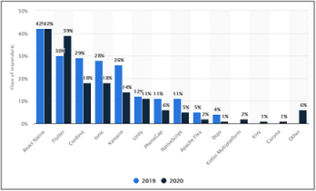

PhoneGap is a fantastic tool that has a lot to offer, but it is important to make sure you’re choosing the right Application Development software. PhoneGap has some strong competitors and alternatives, and there is a chance that one of them might be a better fit.
According to the studies by Statista, the top five cross-platform mobile app tools on 2020 are React Native, Flutter, Cordova, Ionic and Xamarin. Below is their chart based on the most popular cross-platform mobile frameworks usage in 2019-2020.
Flutter is an open-source UI SDK (software development kit) is created by Google that allows cross-platform programmers to build high-performance applications on various platforms such as iOS, Android, Web, and desktop from a single codebase. It was initially released in May 2017 and its seen that Flutter apps fully compile to native code unlike hybrid or React Native apps.
The Flutter developers utilize Dart programming language that helps most of the object-oriented notions and it is also easy for JavaScript or Java developers to understand it. Flutter can be the best cross-platform service tool if you want to develop a custom mobile application on both iOS and Android OS.
The best feature of Flutter is that it supports a widget which helps in enhancing the look of the mobile application. This widget provides an application with multiple features such as scrolling, navigation, fonts, icons, etc and complete native-like performances.
Big names using Flutter: Google Ads, Alibaba and Groupon
React Native is also considered the best by cross-platform mob developers since it allows them to create native applications using JavaScript as a programming language. The strong side of React Native is that modules can be written in languages like C, Swift, Java Objective and Python. It also allows the expert mobile programmers to work on image editing and video processing that aren’t possible with the other API frameworks. React Native developers can interpret the source code and convert it to the native elements in less time. It was launched in 2015 by Facebook.
Big names using React Native: Facebook, Instagram and Pinterest
Ionic is one of the powerful HTML5 SDK that develops native like mobile apps by utilizing advanced technologies such as HTML, CSS, Angular and JavaScript. This SDK primarily focuses on the UI interaction and look of the mobile applications.
This prominent cross-platform tool provides pre-designed components, interactive paradigms, superb themes and typography.
The Ionic developers use API, such as TypeScript, Virtual DOM, JSX, and async, which are best suitable for Progressive Web App (PWA).
Big names using Ionic: Pacifica, Market Watch, Nationwide, McDonald’s
After making a research on this topic, I believe React is the best alternative to PhoneGap. React Native is highly suitable for hybrid apps and even ensures good performance. Additionally, the technology comes with a huge community, so in case of any queries, it is easy to get the solution. Altogether, it will give better support and performance to the platform.